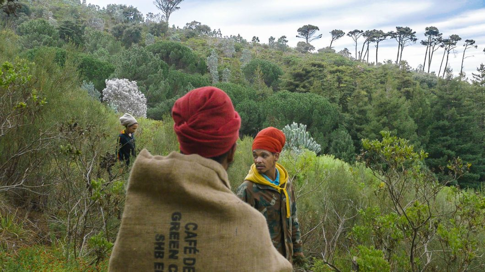
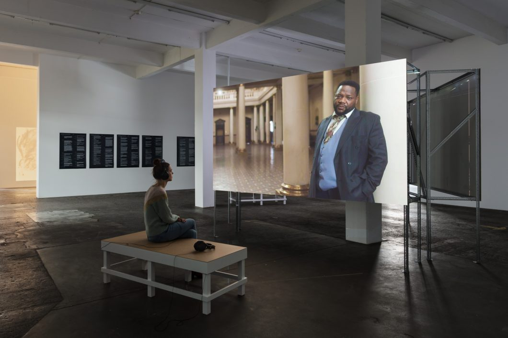
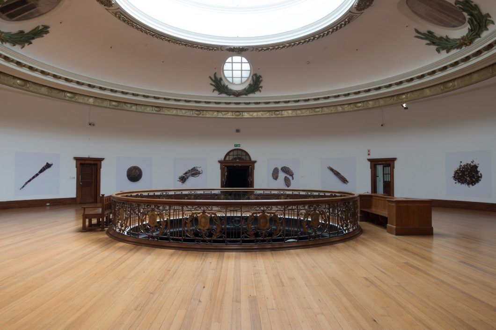

Uriel Orlow
Theatrum Botanicum, 2015–2018
A body of work made between South Africa and Europe that treats the botanical world as a stage for politics. It covers plant migration and bio-piracy, flower diplomacy during apartheid, the garden that Mandela and his fellow prisoners planted on Robben Island, and the court case brought against the traditional healer Mafavuke Ngcobo.
The element shown here is What Plants Were Called Before They Had a Name, in which names carried by plants in South African languages before European botany renamed them are projected as light rather than printed as labels.
More of the work 4 images in total



The artist
Uriel Orlow · Born 1973 in Zurich; lives and works in London, Lisbon and Zurich.
Orlow works in film, sound, photography and installation, usually across long research relationships with a particular place. Theatrum Botanicum came out of several years of work between South Africa and Europe and treats plants as political actors rather than scenery: the garden on Robben Island, flower diplomacy under apartheid, bio-piracy, and the court case brought against the healer Mafavuke Ngcobo. He is explicit that botanical collections are not neutral, and equally explicit about the terms on which he works in places that are not his own.
“Botanical gardens are often colonial archives, with plants from all over the world. There’s an epistemic violence in that.”
Held by the project film, sound and archives, at the source
The artist, recorded published elsewhere, and played there
- Symposium: Theatrum Botanicum and Other Forms of KnowledgeThe Showroom, London, 29 October 2016. Orlow convened this himself with Shela Sheikh, and the gallery published the recording. It belongs to the work rather than reporting on it.
Curators’ note
Custody starts earlier than most people think. It starts at the moment of naming. A plant that enters a collection under a Latin binomial enters as science: it gets a herbarium sheet, a date, a collector, a place in a filing system that will still be searchable in two hundred years. The same plant under the name its neighbours used gets filed as folklore, or is not filed at all. Orlow projects those older names as light rather than printing them as labels, which is close to the only way they appear in a gallery at all.
A reading, not a document drawn by the curators
Afterwards, the artist’s own record of the work: urielorlow.net